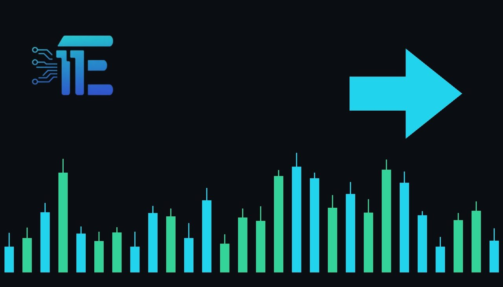

Treasury Yields Hit 5% Amid Nvidia Turmoil and Market Stressអត្រាផលចំណូលប័ណ្ណបំណុលរតនាគារប៉ះពាល់កម្រិត 5ភាគរយ Nvidia និងទីផ្សារ
XAU/USD impact: ◆ Mixedផលប៉ះពាល់លើ XAU/USD: ◆ ចម្រុះ

Markets faced renewed pressure as rising Treasury yields and tech sector uncertainty drove investors toward defensive assets. This broader financial stress and yield movement directly influence gold and dollar dynamics.
ទីផ្សារបានប្រឈមមុខនឹងសម្ពាធថ្មី ខណៈដែលអត្រាផលចំណូលប័ណ្ណបំណុលរតនាគារកើនឡើង និងភាពមិនប្រាកដប្រជាក្នុងវិស័យបច្ចេកវិទ្យា។ ភាពតានតឹងផ្នែកហិរញ្ញវត្ថុនេះជះឥទ្ធិពលដោយផ្ទាល់ដល់ចលនាមាស និងដុល្លារអាមេរិក។
Global financial markets came under intense pressure as rising Treasury yields hit 5 percent alongside growing uncertainty surrounding the technology industry. The sharp market reaction reflected a broader rotation out of technology stocks and into defensive sectors as economic and political risks intensified.
ទីផ្សារហិរញ្ញវត្ថុសកលស្ថិតក្រោមសម្ពាធយ៉ាងខ្លាំង ខណៈដែលអត្រាផលចំណូលប័ណ្ណបំណុលរតនាគារបានកើនដល់កម្រិត 5ភាគរយ ព្រមទាំងមានភាពមិនប្រាកដប្រជាជុំវិញវិស័យបច្ចេកវិទ្យា។ ប្រតិកម្មទីផ្សារដ៏ខ្លាំងនេះឆ្លុះបញ្ចាំងពីការប្តូរទិសដៅចេញពីភាគហ៊ុនបច្ចេកវិទ្យា ទៅកាន់វិស័យការពារ ខណៈដែលហានិភ័យសេដ្ឋកិច្ច និងនយោបាយកើនឡើង។
This environment impacts XAU/USD through multiple transmission channels, primarily via shifting Treasury yields and changing safe-haven demand. When Treasury yields reach significant levels like 5 percent, the opportunity cost of holding non-yielding bullion typically increases, creating downward pressure on precious metals.
បរិយាកាសនេះជះឥទ្ធិពលលើ XAU/USD តាមរយៈបណ្តាញបញ្ជូនជាច្រើន ជាចម្បងតាមរយៈការប្រែប្រួលអត្រាផលចំណូលប័ណ្ណបំណុលរតនាគារ និងតម្រូវការទីសុវត្ថិភាព។ នៅពេលដែលអត្រាផលចំណុលប័ណ្ណបំណុលរតនាគារឡើងដល់កម្រិតសំខាន់ ថ្លៃដើមឱកាសនៃការកាន់កាប់មាសដែលគ្មានការប្រាក់ ដែលបង្កើតសម្ពាធចុះក្រោមលើលោហៈមានតម្លៃ។
Conversely, if broader equity market stress and corporate turmoil deepen, safe-haven demand can strengthen and provide underlying support for gold. Traders evaluating market conditions generally weigh whether rising bond yields will outweigh safe-haven flows, or if economic instability will drive defensive buying.
ផ្ទុយទៅវិញ ប្រសិនបើភាពតានតឹងក្នុងទីផ្សារភាគហ៊ុន និងភាពច្របូកច្របល់របស់សាជីវកម្មកាន់តែជ្រៅ តម្រូវការទីសុវត្ថិភាពអាចនឹងកើនឡើង និងផ្តល់ការគាំទ្រដល់មាស។ អ្នកជួញដូរដែលវាយតម្លៃស្ថានភាពទីផ្សារជាទូទៅពិចារណាថា តើអត្រាផលចំណូលប័ណ្ណបំណុលដែលកើនឡើងនឹងជះឥទ្ធិពលលើលំហូរទីសុវត្ថិភាព ឬថាតើអស្ថិរភាពសេដ្ឋកិច្ចនឹងជំរុញឱ្យមានការទិញការពារ។
Market participants should monitor Treasury yield trajectories, equity market stability, and ongoing developments within the technology sector for further direction.
អ្នកចូលរួមទីផ្សារគួរតែតាមដានទិសដៅអត្រាផលចំណូលប័ណ្ណបំណុលរតនាគារ ស្ថិរភាពទីផ្សារភាគហ៊ុន និងការវិវត្តដែលកំពុងបន្តនៅក្នុងវិស័យបច្ចេកវិទ្យាសម្រាប់ទិសដៅបន្ថែម។
Key takeawaysចំណុចសំខាន់ៗ
- Treasury yields reached 5 percent amid broader market uncertainty.
- អត្រាផលចំណូលប័ណ្ណបំណុលរតនាគារបានឡើងដល់ 5ភាគរយ
- Rising yields increase the opportunity cost of holding bullion.
- ការកើនឡើងនៃអត្រាផលចំណូលប័ណ្ណបំណុលបង្កើនថ្លៃដើមឱកាសនៃការកាន់កាប់មាស។
- Equity market stress can stimulate safe-haven demand for gold.
- ភាពតានតឹងក្នុងទីផ្សារភាគហ៊ុនអាចជំរុញតម្រូវការទីសុវត្ថិភាពសម្រាប់មាស។
Original commentary by THE MARKET CODE, based on public reporting from Yahoo! Finance: GC=F News. Written with the help of AI. Educational only, not financial advice.
មតិវិភាគដើមដោយ THE MARKET CODE ផ្អែកលើការរាយការណ៍សាធារណៈពី Yahoo! Finance: GC=F News។ សរសេរដោយមានជំនួយពី AI។ មាតិកាអប់រំប៉ុណ្ណោះ មិនមែនជាដំបូន្មានហិរញ្ញវត្ថុទេ។